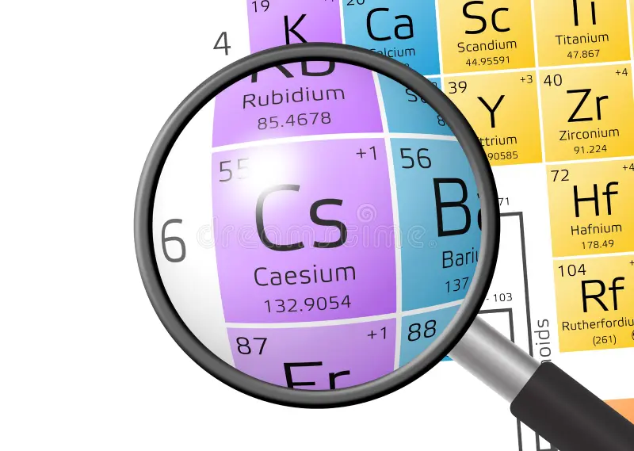
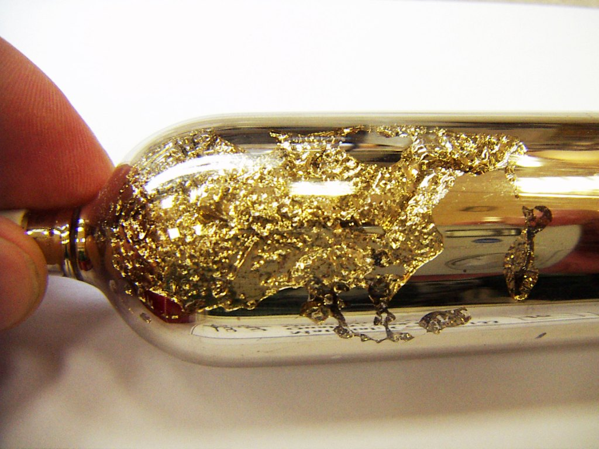

Цезий
Це́зий (химический символ — Cs, от лат. Caesium) — химический элемент 1-й группы (по устаревшей классификации — главной подгруппы первой группы, IA), шестого периода периодической системы химических элементов Д. И. Менделеева, с атомным номером 55.Простое вещество цезий — это мягкий, вязкий щелочной металл серебристо-жёлтого цвета. Своё название цезий получил по цвету двух ярких синих линий в эмиссионном спектре (от лат. caesius — небесно-голубой).

Открыт в 1860 г. Р. В. Бунзеном и Г. Р. Кирхгофом методом спектрального анализа; назван по цвету характерных линий в спектре (от лат. caesius – небесно-голубой). Металлический цезий впервые получен шведским химиком К. Сеттербергом в 1882 г. при электролизе расплавленной смеси CsCN и Ba.
Содержание цезия в земной коре 3,7·10–4 % по массе, в морской воде 3,0·10–8 %. Известно 2 минерала цезия – поллуцит (до 26–32 % Cs2O) и крайне редкий авогадрит (K,Cs)[BF4]. Цезий может изоморфно замещать K и Rb в полевых шпатах и слюдах. Примесь Cs встречается в берилле, карналлите, вулканическом стекле. В геохимическом отношении Cs близок к Rb и K, отчасти к Ba.

Производят непосредственно из поллуцита методом вакуумтермического восстановления (Ca, Mg, Al и другими металлами). Соединения цезия также получают путём переработки поллуцита. Руду, обогащённую флотацией, ручной рудоразборкой и т. п., разлагают кислотами (H2SO4, HNO3 и др.) или оксидно-солевыми смесями (например, CaO и CaCl2; спекание). Из продуктов разложения поллуцита цезий осаждают в виде малорастворимых соединений. Затем осадки переводят в растворимые соли, после чего получают особо чистые соединения (путём кристаллизации из растворов при сорбции примесей на окисленных активированных углях). Глубокую очистку металлического цезия ведут методом ректификации. Объём производства цезия в мире около 20 т/год (2017).Цезий используют для изготовления фотокатодов, электровакуумных фотоэлементов, фотоэлектронных умножителей и др. Изотопы применяют в квантовых стандартах частоты (133Cs), в радиологии (137Cs). Резонансная частота энергетического перехода между подуровнями основного состояния 133Cs положена в основу современного определения секунды (см. Цезиевый эталон частоты).